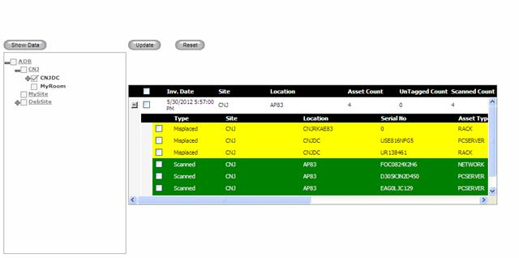
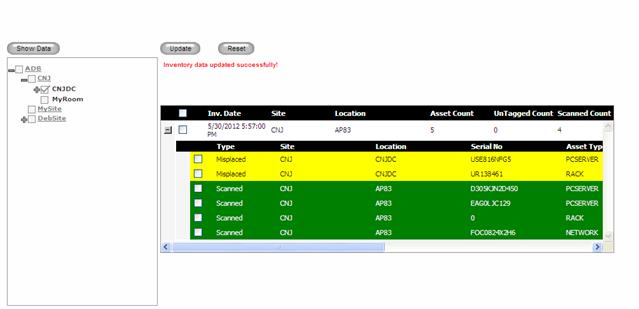

Inventory Update page is used to update the inventory discrepancies in the DCTrackMobile system. When an Inventory is performed using DCTrackMobile and update the inventory information using “Update” function. The information will be logged into the server for verification (actual update is not happened). Using this page user can see the assets scanned, missed and misplaced in a particular location and user can take an action after cross verifying the inventory data.
Inventory Update actions:
1. Scanned: indicated by green color. These assets are in correct location and scanned during inventory process. On update, scan information will be logged into the transaction log and location will not be changed.
2. Missing: indicated by orange color. These assets are not found during the inventory process. On update, no action will be taken and missing information will be logged into the transaction log.
3. Misplaced: indicated by yellow color. These assets belong to a different location and found in this location during inventory process. On update, these assets location will be updated to current location and location update information will be logged into the transaction log.
This page shows only the latest inventory details for a location
To update inventory,
1. Navigate Asset>>Inventory Update on the DCTrackMobileWeb menu bar.
You will see the Inventory Update Screen.
2. Select a location from location tree and click Show Data button to see the inventory details of the selected location.

Figure 141: Inventory update screen
3. Check assets, which needs to be updated.
4. Click Update button to update the inventory data.

Figure 142: Inventory Update Screen after Update
|
Copyright © 2019 Hewlett
Packard Enterprise,v5.2.
|